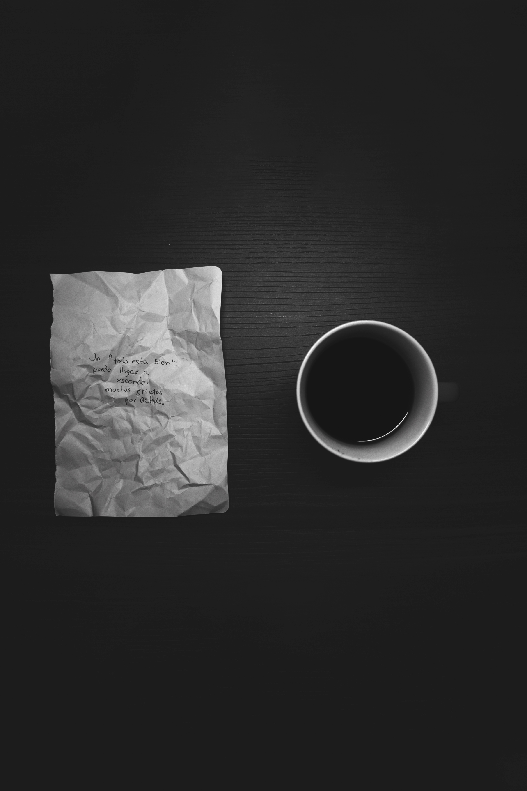
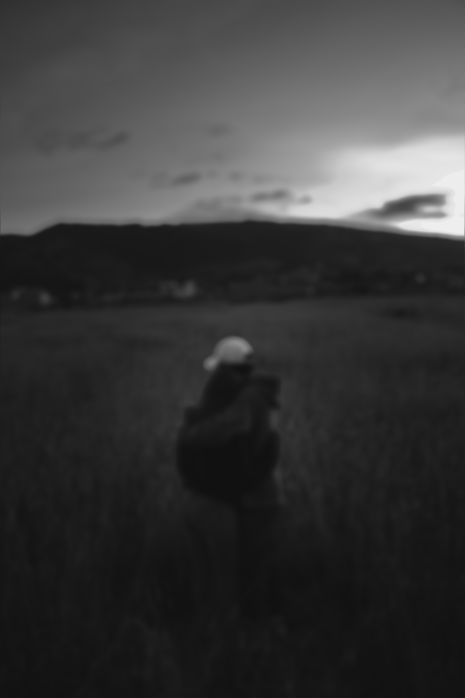
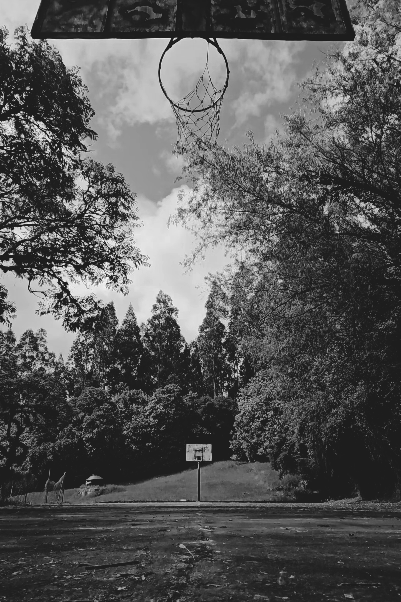

BYPASS
La serie 'Bypass' es una exploración visual de la dualidad humana: el contraste entre la imagen pública que proyectamos y nuestro mundo interior. A través de estas fotografías, documento esos momentos de pausa e introspección donde nos quitamos las "máscaras" sociales. El proyecto captura la tranquilidad que existe detrás del ruido cotidiano, destacando aquellos refugios personales —como el deporte y la música— que nos permiten reconectar con nosotros mismos. Es una mirada íntima a esa capa de nuestra identidad que a menudo pasamos por alto en el ajetreo diario.
Post-Producción:
Equipo Fotográfico:








El Concepto Narrativo
"Bypass" nace de la necesidad de documentar la disonancia cognitiva entre la fachada pública que construimos y la realidad psicológica que enfrentamos a puerta cerrada. El proyecto no busca la belleza estética tradicional, sino la representación sincera de la introspección.
El uso de la luz y la sombra en la composición (revelado digital) fue clave para aislar al sujeto, dejando gran parte del encuadre en una oscuridad profunda que simboliza el espacio personal de pensamiento.
Elementos Explorados
- La Dualidad: Retratos que exponen el contraste de las emociones internas frente a las externas.
- El Silencio: Captura de posturas corporales y espacios vacíos que transmiten calma.
- Refugios Personales: El contraste visual cuando intervienen la música y el deporte como vías de escape.
- Espacio Negativo: Uso de encuadres amplios y sombras fuertes para enfocar la atención.